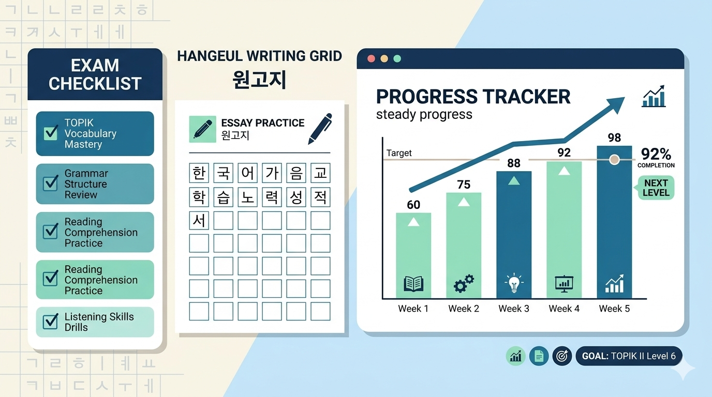

Cognitive Benefits of Real-Time Korean Typing Practice
For foreign learners of the Korean language, transitioning from passive visual recognition to active output is one of the most demanding developmental milestones. Unlike alphabetical languages where letters are placed sequentially in a single line, Korean is structured into distinct syllabic blocks composed of an initial consonant (초성), a medial vowel (중성), and an optional final consonant (종성, batchim).
Our browser-based Interactive Typing Game (한메타자 스타일) is scientifically calibrated to bridge the gap between phonological awareness and motor muscle memory. By requiring learners to assemble Hangul character blocks under mild temporal pressure, learners reinforce their internal representation of syllable geometry.
| Pedagogical Dimension | Mechanism in Typing Game | Learning Outcome |
|---|---|---|
| Kinesthetic Encoding | Finger positioning on the 2-Set (두벌식) keyboard layout | Automatic keyboard mastery without relying on romanized keyboards. |
| Auditory Verification | Real-time Text-to-Speech (TTS) vocalization upon successful hits | Immediate reinforcement of standard pronunciation and pitch accent. |
| Error Remediation | Automated tracking of missed terms in the "오답 노트" (Mistake Log) | Targeted review of weak orthographic patterns and difficult batchims. |
🎧 New: Learn Authentic Korean Through K-Pop Anthems
Textbooks teach grammar formulas, but popular music reveals how native speakers express affection, emotional vulnerability, and bold confidence. Our curated K-Pop Lyric Study Room pairs embedded official music videos with line-by-line morphological analysis, romanized phonetics, and grammatical explanations.
Featured tracks include ROSÉ & Bruno Mars' viral APT., BTS' timeless Spring Day, JENNIE's Mantra, NewJeans' Ditto, Stray Kids' God's Menu, and more.
How to Play and Maximize Your Learning
To gain the maximum educational yield from each typing session, follow this step-by-step methodology:
🎮 Operational Instructions
- Observation & Meaning Check: As words descend from the top of the canvas, review both the Hangul target and its English conceptual gloss displayed right below it.
- Keystroke Input (Desktop & Mobile): On desktop keyboards, enter the Korean word and press
Enter. On mobile touchscreens, words auto-detonate the moment the syllabic block is accurately completed, eliminating tedious keypad submissions. - Multi-Sensory Audio Feedback: Listen attentively as the synthesized native speaker voice vocalizes the word immediately after an arpeggio chime confirms your accuracy.
- Mistake Log Analysis: When a word reaches the bottom baseline, a buzzer alerts you and adds the word directly into your persistent session log for later repetition.
Curriculum Architecture & Core Foundations
A systematic Korean learning regimen requires balancing dynamic gamified sessions with formal grammatical and lexical study. We recommend structuring your daily study around three core pillars:
1. Eliminate Romanization Early
Relying on Latin letter approximations distorts Korean phonetics, particularly the crucial distinctions between plain (ㄱ, ㄷ, ㅂ), aspirated (ㅋ, ㅌ, ㅍ), and tensed (ㄲ, ㄸ, ㅃ) consonants. Regular keyboard practice forces the brain to think directly in Hangul graphemes.
2. Prioritize High-Frequency Core Lexicon
The 300 foundational vocabulary items integrated into this platform cover over 65% of daily communicative interactions in Seoul—ranging from public transit, banking, and dining to social courtesy formulas.
3. Pair Words with Syntactic Templates
Memorizing isolated words rarely translates into fluent conversation. Explore our dedicated grammar guides and printable worksheets to observe how nominal roots attach to subject markers (-이/가, -은/는) and verbal predicates (-아요/어요).

🎯 TOPIK (Test of Proficiency in Korean) Master Hub
Whether you are aiming for basic proficiency in TOPIK I (Levels 1–2) or advanced academic/visa certification in TOPIK II (Levels 3–6), strategic preparation is critical. Explore our dedicated, high-yield examination resources:
Curated Platform Navigation
Explore all sections of our platform to build a well-rounded foundation in modern Korean:
- 2026 TOPIK Preparation & Pacing Guide: Time management tips, high-frequency question traps, and section-by-section pacing strategies for TOPIK I & II.
- 50 Essential TOPIK Grammar Patterns: In-depth master reference covering 50 core patterns, syntactic pairs, and formal essay rules for Item #54.
- K-Pop Lyrics & Music Studio: Deconstruct viral hooks and poetic verses with synchronized YouTube playback and grammar notes.
- Interactive Typing Practice: Reinforce keyboard fluency, spelling accuracy, and auditory comprehension with our 300-word dataset.
- Core Vocabulary Flashcard App: Review complete sample sentences, grammatical functions, and contextual audio guides.
- Printable 60-Page Worksheet: Practice balanced handwriting with 원고지 cross-grids and stroke orders.
- Modern Slang & Buzzwords (2026): Stay up-to-date with viral cultural expressions and digital colloquialisms.
- Honorifics & Politeness Guide: Understand interpersonal speech levels and respectful social communication.
- Essential Expat Portals & Survival Audio: Access official services for healthcare, public transport, and 50+ spoken survival phrases.